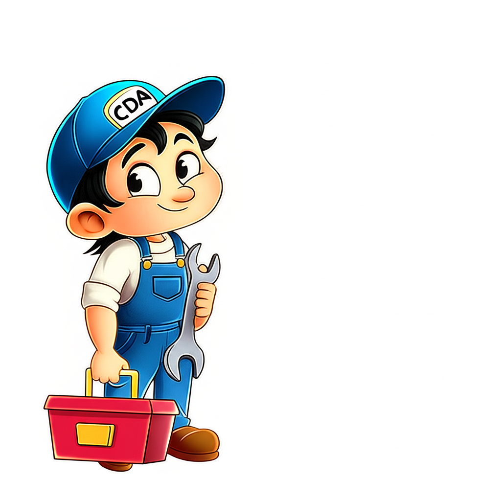
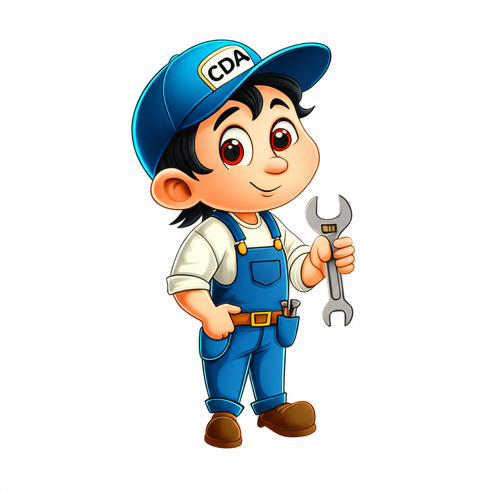
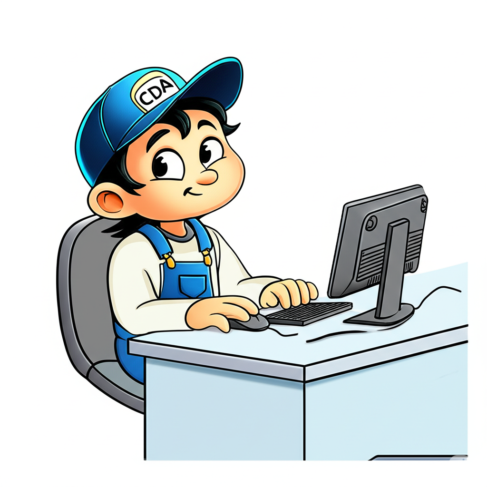

Fast & Reliable Appliance Repair in Coeur d’Alene and Beyond
Serving Coeur d’Alene, Hayden, Sagle, Athol, Spokane Valley, and surrounding areas with trusted service. Over 10 years of experience!
Whether you’re a homeowner, a property management company, or need breakroom repairs—we’ve got you covered!
As a family-owned business, we’re committed to minimizing appliance downtime in an honest, budget-friendly way for homes, rental properties, and community spaces.
We’re a small, family-owned team at Coeur d’Alene Appliance Repair, and we know how much a broken appliance can throw off your day. From one family to another, we feel your pain—whether you’re a parent facing a laundry mountain, a grandparent trying to save that beloved ice cream stash, or the fun auntie and uncle whose home is party central!
We also understand the needs of property managers committed to quality units and organizations who take pride in keeping community spaces running smoothly. No matter who you are, we’re here to get your appliances back in action—fast, fair, and budget-friendly!
Our Services Across the Region

We provide expert repairs in Coeur d’Alene, Hayden, Sagle, Athol, Spokane Valley, Post Falls, Rathdrum, Spirit Lake, Worley, and Kootenai County.
Refrigerator Repair
Fixing leaks and cooling issues for all brands in your area.
Freezer Repair
Fast fixes for deep freezers and freezer units in your area.
Washer & Dryer Repair
Fast fixes for spinning or heating problems in Coeur d’Alene and beyond.
Microwave Repair
Repairing heating issues, door problems, and more across Hayden, Spokane Valley, and more.
Dishwasher Repair
Fixing leaks, drainage issues, and cleaning problems in Post Falls, Rathdrum, and beyond.
Range, Oven & Stove Repair
Professional repairs for ranges, ovens, and stoves in your area.
Other Home Appliances
Fixes for garbage disposals and more in Coeur d’Alene and surrounding areas.
What Our Customers Say
"Fixed my fridge in under an hour! Super friendly and affordable."
– Sarah T., Coeur d’Alene
"Best appliance repair in Hayden. Highly recommend!"
We serve Coeur d’Alene, Hayden, Sagle, Athol, Spokane Valley, Post Falls, Rathdrum, Spirit Lake, Worley, and Kootenai County.

What appliances do you repair?
We repair refrigerators, freezers, washers, dryers, microwaves, dishwashers, ranges, ovens, stoves, and other home appliances like garbage disposals in Coeur d’Alene, Hayden, and surrounding areas.
Do you offer same-day service?
We offer reliable appliance repair with prompt scheduling to meet your needs. Call us at (509) 564-9099 to book an appointment!
How can I check if my appliance has been recalled?
You can check for recalls on your appliances using the U.S. Consumer Product Safety Commission’s recall database. Visit www.cpsc.gov/recalls and search by product type or brand to see if your refrigerator, freezer, washer, dryer, microwave, dishwasher, range, oven, stove, or other appliance is affected.
Troubleshooting Tips for Your Appliances
Refrigerator Not Cooling?
Clean the condenser coils and ensure proper air circulation. If it’s still not cooling, call us at (509) 564-9099 in Coeur d’Alene or Hayden.
Washer Not Spinning?
Balance the load and check the lid switch. If it doesn’t spin, we can help in Spokane Valley—call (509) 564-9099.
Dryer Not Heating?
Clear the lint filter and vent. If it’s still cold, contact us in Sagle or Athol at (509) 564-9099.
Microwave Not Heating?
Ensure the door is closed properly and check the power setting. For repairs in Rathdrum, call (509) 564-9099.
Dishwasher Not Draining?
Clean the drain filter and check the hose. If it’s still not draining, we’re in Worley—call (509) 564-9099.
More Troubleshooting Resources
Visit your appliance manufacturer’s troubleshooting page for detailed guides:
Register Your Appliances for Warranties and Recall Notices

Protect your investment and stay informed by registering your appliances with the manufacturer. Here’s why and how:
Warranty Benefits: Registering your appliance ensures you can easily claim warranty repairs if something goes wrong within the warranty period.
Recall Notifications: Manufacturers will notify you of any safety recalls, helping you address potential issues promptly.
Steps to Register: Find your appliance’s serial and model number (usually on a label on the appliance), visit the manufacturer’s website, and follow their registration process.
Stay Updated: Check the manufacturer’s website or sign up for email alerts to receive recall notices and maintenance tips.
Register your appliance or check for recalls with these manufacturers: